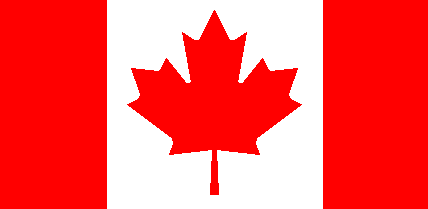

About me
Lin Li 2022/3/3
My name is Lin Li. This is the English version of a Chinese name. In Chinese, it looks like this:

I come from China, which is far away from Canada. Most people living in China think Canada is a friendly country and think the people in this country are very kind.

I am passionate about artificial intelligence (AI), because I think AI has great potential and it will surely have a profound impact on our life in the future.
HTML and CSS
Lin Li 2022/3/10
HyperText Markup Language, also called HTML, is a standard markup language for creating Web pages. You can use this language to build the content of the web pages you want to create.
An HTML tag helps computers turn documents into web pages. It also represents the beginning and end of the document.
An HTML element is an important component of the site structure, and programmers can add elements they want like headings, paragraphs, and tables. It looks like this:

An HTML attribute is added to an HTML tag to modify some attributes of the element to which the tag corresponds. It looks like this:
An inline element takes up only its own content width on the page, and the element is not created on a new line when displayed on the page.
A block element is completely different from A in that its width will be the entire width of the page and it will be created on a new line.
Cascading Style Sheets, also called CSS is a style sheet language. A CSS rule is modifying the style of the web page. For example, modify paragraph font styles, background styles, and page layout styles.
CSS selector modifies the style of the web page. For example, modify paragraph font styles, background styles, and page layout styles. It looks like this:
CSS value sets the value of the property of the part of the page that you want to modify. For example, you can set the background of the last paragraph to yellow or any colour you like. You can also set many other properties like the height of the font or the colour of the font with values of the appropriate type. CSS values contain a variety of types, such as Integers, Strings, and URLs. It looks like this:
Security precautions for password management
Lin Li 2022/3/17
Today's Average Tech users have more and more accounts in their digital lives, and the ensuing problem is that they need to remember a large number of passwords easily while ensuring that the passwords are not too simple. Having good security precautions to ensure that passwords are not hacked becomes very reusable. I'm going to recommend a handy way to make password management easy and efficient.
I recommend this way to ensure password security because I think the best way to prevent password theft is to keep passwords complex, but they are often hard to remember. This method helps us create and modify the password according to the name of the website to a personalized password, such an advantage is that our password is different in different websites, to a large extent to ensure the security of our account.
This method of creating a password is simple. This method of creating a password is simple:
1.Choose a favourite sentence, which should be more than 10 words long.
Take the first letter of each word in the sentence and connect them with a lowercase letter.
2.Follow the string with the name of the site in uppercase, such as FACEBOOK for Facebook Website, AMAZON for AMAZON Website.
3.Add some numbers. My advice is to add the date when you first used the method and keep using that number.
4.Add two of your favourite special characters at the end and reuse them in future passwords.
This approach also introduces some inconveniences:
1.The password is a bit long and it takes a bit longer each time we type it in.
2.Rules in the formation of codes are regular. Do not tell others the words you used to make a password and the words you chose.
3.We may have some special circumstances when we set the name of the website, some website names may be made up of multiple names, so we have to follow a rule, such as adding the full name of the website in the password.
In conclusion, as long as you follow my recommended password Settings, we can easily solve the security problems of website passwords and keep us from forgetting them due to their complexity.
League of Legends Game Strategy Guide
Lin Li 2022/3/24
League of Legends is a game with a history of more than ten years. It has a large number of veteran players, and some novice players may often fail when playing against them. I will write some personal tips for these novice players to help them have a better experience when playing.
The most important thing we need to know is how to win. There is a building in the enemy base called the Crystal that we need to destroy to win. It looks like this:

We need to make our characters stronger to achieve the goal of destroying the local crystal. The first way to make our characters stronger is to give them experience to level up. There are several ways to gain experience:
1.Kill a pawn
2.Kill an enemy hero
3.Kill a monster
Another way to make our characters stronger is to get coins to buy equipment for our characters. Here are a few common ways to get gold:
1.Destroy a tower
2.Destroy a scout guard
3.Kill a pawn
4.Kill an enemy hero
5.Kill a monster
With the coins, we were able to buy equipment for our characters from stores near where they were born. These equipments have different attributes, and we need to buy the corresponding equipment according to the attributes we want. The Followings are The names, prices and effects of some powerful gear:
| Name | Price | Effect |
| Fanatics armour | 3000 | Provides a lot of health |
| The blade of endless | 3800 | Provides high physical output |
| Vanity staves | 2700 | Provides high spell output |
By making your character stronger and stronger, destroying one enemy building after another, and finally destroying the local crystal, you will see the victory sign. It looks like this:
With these tips, novices can quickly learn the skills to win games and have a great experience playing against older players.
Life in Canada
Lin Li 2022/3/3
I have been in Canada for a month and find that there are many different aspects of life here. So I write this article to record my feelings after this month's life.
The biggest difference is in two ways. One is diet, the other is transportation.
Diet are very different from domestic. In Canada, a lot of food is semi-prepared or fast food, which can save a lot of cooking time. Cooking in China is different, people tend to prefer more complicated cooking methods, which consume more time, but also add fun to life. In addition, foods like potato chips and hamburgers are very popular in Canada, while rice and noodles are more popular in China.
The transportation aspect is another big difference from the domestic aspect. Canada's population density is relatively low, so the distance between places like shopping malls is relatively far, and it is difficult for people to go out and do things without a car. In China, the density of shops is higher because of the high density of population, and sometimes people can choose to walk.